PHYS598500 · Week 8
Identifying and Calibrating Chips
Making and checking a gate
Goal: an ideal gate, for example \(X_{\frac{\pi}{2}}\). How do we make it? How close is the real gate to it?
Calibration and evaluation form a loop. Tomography and RB are different ways to evaluate, not steps that every experiment must pass.
Contents
1
Measurement
From one readout to a probability
2
Initialization
Every shot starts in |0⟩
3
Fidelity
How close a state or a gate is to the target
4
Quantum state tomography
The full state from many readouts
5
Randomized benchmarking
The error per gate, without the readout errors
6
Cross-entropy benchmarking
The fidelity of large random circuits
7
Spectroscopy
One tone and two tones: find the resonator and the qubit
8
Time-domain measurements
Rabi, power Rabi, T₁, Ramsey, echo, CPMG
9
Gate operation
Pulses become rotations
10
Gate fidelity
What limits a gate, and how to measure it
PHYS598500 · Week 8
Measurement
Single-shot readout
One readout gives one point in the IQ plane.
A threshold turns the point into 0 or 1.
The two blobs overlap a little, and the qubit can decay during the readout. Both give errors: \(P(1|0)\) is the probability to read 1 after preparing \(|0\rangle\), \(P(0|1)\) the probability to read 0 after \(|1\rangle\).
Lecture animation of an ideal model: Gaussian noise, decay with T₁ = 7.6 μs during τ. Numbers: T. Walter et al., Phys. Rev. Applied 7, 054020 (2017).
Readout histograms


Left: E. Jeffrey et al., Phys. Rev. Lett. 112, 190504 (2014), Fig. 3. Right: T. Walter et al., Phys. Rev. Applied 7, 054020 (2017), Fig. 2.
Shot statistics
One shot gives 0 or 1.
\(N\) shots give \(n_1\) results 1. The estimate of the probability is \(p\approx\frac{n_1}{N}\).
The statistical error falls as \(\frac{1}{\sqrt N}\):
For \(\Delta p\approx10^{-3}\) at \(p=0.5\), we need about \(2.5\times10^{5}\) shots.
Lecture animation of an ideal model: each shot is 1 with the probability p.
Correcting readout errors
Readout errors mix the two results. With \(\vec P=\big(P(0),P(1)\big)\):
Measure \(M\) with prepared \(|0\rangle\) and \(|1\rangle\). Then invert it:
With shot noise, the result can fall outside [0, 1].
Lecture animation of an ideal model. Default errors: T. Walter et al., Phys. Rev. Applied 7, 054020 (2017).
Measurement in the x and y bases
The readout measures only \(\hat\sigma_z\).
For \(\hat\sigma_x\): first \(R_y\big(-\frac{\pi}{2}\big)\). It turns \(+x\) to \(+z\).
For \(\hat\sigma_y\): first \(R_x\big(\frac{\pi}{2}\big)\). It turns \(+y\) to \(+z\).
Then read, and repeat many times:
Lecture animation of an ideal model.
Frequency-multiplexed readout
Each qubit has its own readout resonator.
The resonators have different frequencies on one line.
One readout pulse with all the frequencies reads all the qubits at the same time.
(b): one resonator, qubit in |0⟩ (blue) and |1⟩ (red).

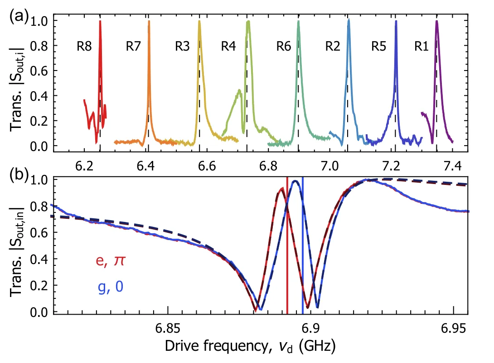
J. Heinsoo et al., Phys. Rev. Applied 10, 034040 (2018), Fig. 3.
PHYS598500 · Week 8
Fidelity
Pure and mixed states
Pure state: one ket \(|\psi\rangle\), the same in every run. \(\hat\rho=|\psi\rangle\langle\psi|\).
Mixed state: the runs differ. With the probability \(p_k\) a run has \(|\psi_k\rangle\):
One qubit: \(\hat\rho=\frac{1}{2}\big(\hat I+\vec r\cdot\hat{\vec\sigma}\big)\), \(\vec r=\sum_k p_k\vec n_k\), \(\vec n_k\): the Bloch vector of \(|\psi_k\rangle\). Pure: \(|\vec r|=1\), on the sphere. Mixed: \(|\vec r|<1\), inside.
Purity: \({\rm Tr}\,\hat\rho^2=\frac{1}{2}\big(1+|\vec r|^2\big)\). 1 for a pure state, \(\frac{1}{2}\) for \(\hat\rho=\frac{1}{2}\hat I\).
The measurement sees only \(\hat\rho\). \(|0\rangle\), \(|1\rangle\) half each and \(|{+}\rangle\), \(|{-}\rangle\) half each give the same \(\hat\rho=\frac{1}{2}\hat I\).
Lecture animation of an ideal model: twelve runs with equal probability.
Fidelity of a state
Target: a pure state \(|\psi\rangle\). Result of the experiment: a state \(\hat\rho\).
\(F\) is the probability that the test “is the state \(|\psi\rangle\)?” gives yes. \(0\le F\le1\), and \(F=1\) only when \(\hat\rho=|\psi\rangle\langle\psi|\).
Two pure states
The result is also pure, \(\hat\rho=|\phi\rangle\langle\phi|\):
This is the transition probability of the Born rule: the probability to find the state \(|\phi\rangle\) in \(|\psi\rangle\). Its other name is the overlap.
One qubit
\(|\psi\rangle\langle\psi|=\frac{1}{2}\big(\hat I+\vec n\cdot\hat{\vec\sigma}\big)\), \(\hat\rho=\frac{1}{2}\big(\hat I+\vec r\cdot\hat{\vec\sigma}\big)\):
\(\vec n\): Bloch vector of the target, \(|\vec n|=1\). \(\vec r\): Bloch vector of the result, \(|\vec r|\le1\). \(|\vec r|<1\): a mixed state.
Examples of state fidelity
Choose the target and the result with \(\theta\) and \(\phi\). \(\alpha\): the angle between their Bloch vectors.
Examples with the target \(|0\rangle\):
Same state: \(F=1\).
\(|0\rangle\) and \(|1\rangle\): \(F=0\).
\(|0\rangle\) and \(|+\rangle=\frac{1}{\sqrt2}\big(|0\rangle+|1\rangle\big)\): \(F=\frac{1}{2}\).
Fully mixed state, \(\vec r=0\): \(F=\frac{1}{2}\) for every target.
A rotation error of \(10^\circ\): \(F=\cos^2 5^\circ\approx0.992\).
Lecture animation of an ideal model.
Fidelity of a gate
Ideal gate \(\hat U\). Real gate: a process \(\mathcal E\), with its errors.
1. Choose an input state \(|\psi\rangle\).
2. Ideal output \(\hat U|\psi\rangle\). Real output \(\mathcal E\big(|\psi\rangle\langle\psi|\big)\).
3. State fidelity of the real output with the ideal output:
4. Average over all input states on the Bloch sphere:
\(r\): the average error of the gate.
Lecture model: ideal gate Rx(90°), the real gate Rx(90° + ε) followed by depolarizing p. Defaults: the calibrated gate (F = 0.9995) and the over-rotation π/64 of S. Sheldon et al., Phys. Rev. A 93, 012301 (2016), Fig. 1(a).
PHYS598500 · Week 8
Randomized benchmarking
24 single-qubit Clifford gates and their decomposition
| angle | axis (x, y, z) | pulses (time order) |
|---|---|---|
| — | — | I (idle) |
| 180° | (1, 0, 0) | X |
| 180° | (0, 1, 0) | Y |
| 180° | (0, 0, 1) | Y, X |
| 90° | (1, 0, 0) | X/2 |
| 90° | (−1, 0, 0) | −X/2 |
| 90° | (0, 1, 0) | Y/2 |
| 90° | (0, −1, 0) | −Y/2 |
| 90° | (0, 0, 1) | −X/2, Y/2, X/2 |
| 90° | (0, 0, −1) | −X/2, −Y/2, X/2 |
| 180° | (1, 0, 1) | X, −Y/2 |
| 180° | (−1, 0, 1) | X, Y/2 |
| 180° | (0, 1, 1) | Y, X/2 |
| 180° | (0, −1, 1) | Y, −X/2 |
| 180° | (1, 1, 0) | X/2, Y/2, X/2 |
| 180° | (1, −1, 0) | −X/2, Y/2, −X/2 |
| 120° | (1, 1, 1) | Y/2, X/2 |
| 120° | (−1, 1, 1) | −X/2, Y/2 |
| 120° | (1, −1, 1) | X/2, −Y/2 |
| 120° | (−1, −1, 1) | −Y/2, −X/2 |
| −120° | (1, 1, 1) | −X/2, −Y/2 |
| −120° | (−1, 1, 1) | −Y/2, X/2 |
| −120° | (1, −1, 1) | Y/2, −X/2 |
| −120° | (−1, −1, 1) | X/2, Y/2 |
Pulses in time order, the set of R. Barends et al., Nature 508, 500 (2014), Supplementary Table S6. Lecture animation of an ideal model.
Idea of randomized benchmarking
Apply m random Clifford gates. The last gate undoes the whole sequence, so the ideal result is |0⟩.
Errors lower the probability \(P(0)=\langle0|\hat\rho|0\rangle\) at the end, the survival probability. Repeat for many random sequences and many lengths m.
\(P(0)\)
\(C_1,\dots,C_m\): random Clifford gates. Recovery gate: \(C_r=\big(C_m\cdots C_2C_1\big)^{-1}\). Ideal: the sequence is the identity, and \(P(0)=1\).
Single-qubit Clifford gates
Clifford gates map the axes ±x, ±y, ±z onto each other.
One qubit has 24 Clifford gates: the rotations of a cube.
A random sequence moves the state between the six axis states.
Each Clifford is played as the pulses of the table: X, Y turn by \(180^\circ\), ±X/2 and ±Y/2 by \(\pm90^\circ\).
The inverse of a Clifford sequence is a Clifford gate. So the recovery gate is easy to find.
Lecture animation of an ideal model: the 24 Cliffords as rotations of the Bloch sphere, played as the pulses of R. Barends et al., Nature 508, 500 (2014), Supplementary Table S6. Amplitude error −3.4 %: S. Sheldon et al., Phys. Rev. A 93, 012301 (2016), Fig. 2(b).
Survival probability
Survival probability: the probability to find \(|0\rangle\) at the end of the sequence,
Measured: the fraction of shots that give 0, then the average over many random sequences of length \(m\).
1. Each random Clifford makes the Bloch vector shorter, on average by the factor \(p\).
2. Ideal end state \(|0\rangle\): \(r_z=1\). After \(m\) Cliffords: \(r_z=p^{m}\).
3. Ideal: \(A=B=\frac{1}{2}\).
Preparation and readout errors (SPAM) change \(A\) and \(B\), not \(p\).
Average error per Clifford gate: \(r=\frac{1-p}{2}=1-F_{\rm ave}\).
\(F_{\rm ave}\): the average gate fidelity, averaged over the Clifford gates.
Lecture animation of an ideal model: ideal preparation and readout.
Assumptions of randomized benchmarking
\(P(m)=A\,p^{m}+B\) gives the error per Clifford only under these conditions:
| condition | if it fails |
|---|---|
| Every Clifford has about the same error; no memory between gates | The decay is not one exponential. |
| No drift during the experiment | \(p\) changes in time; the fit mixes different gates. |
| The qubit stays in \(|0\rangle\) and \(|1\rangle\) | Leakage gives an extra decay and moves \(B\) (leakage RB). |
| Preparation and readout do not depend on \(m\) | SPAM no longer stays in \(A\) and \(B\). |
| Enough contrast \(A\) | \(p\) cannot be fitted. |
SPAM is not removed. It goes into \(A\) and \(B\), so \(r\) does not need it. \(C_r\) is a real gate too; it need not be perfect.
\(r\) is the error per Clifford, not per pulse. One Clifford is 1.875 pulses on average (Barends 2014): about \(\frac{r}{1.875}\) per pulse, an estimate.
E. Magesan, J. M. Gambetta, J. Emerson, Phys. Rev. A 85, 042311 (2012). R. Barends et al., Nature 508, 500 (2014).
Randomized benchmarking of a transmon
Chow et al.: one transmon qubit, random sequences of gates.
(a) Grey: single sequences. Black: their average. The decay gives 1.1 % error per gate for \(\sigma=3\) ns.
(b) \(\sigma\): the width of the Gaussian pulse. Short pulses: the level \(|2\rangle\) adds errors. Long pulses: relaxation adds errors.

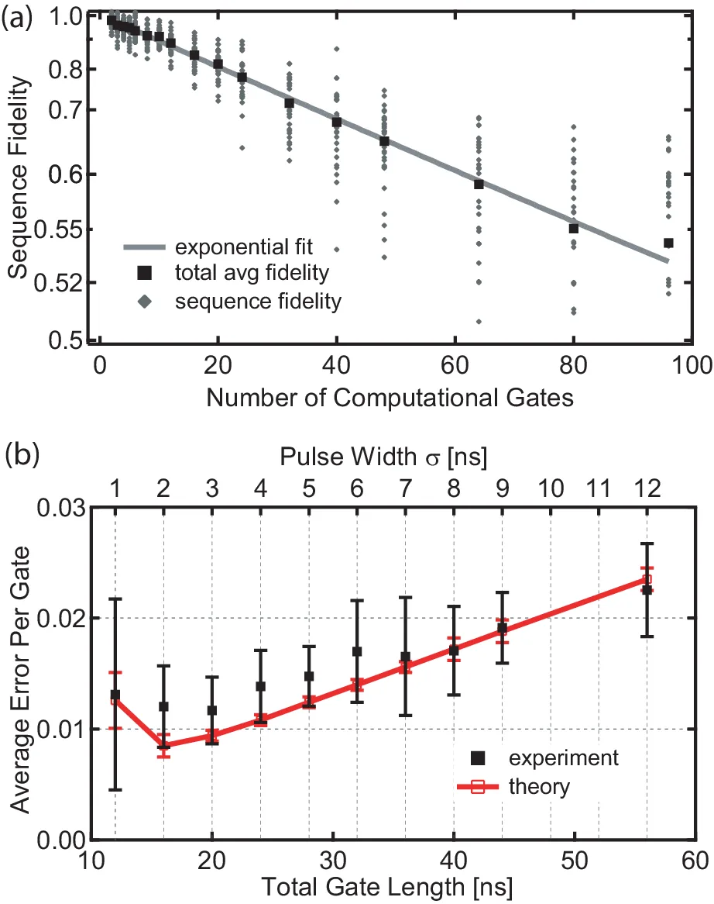
J. M. Chow et al., Phys. Rev. Lett. 102, 090502 (2009), Fig. 4.
Benchmarking of single-qubit gates
Interleaved RB: put the gate \(G\) after each random Clifford. The reference sequences give \(p\), the interleaved ones \(p_C\).
\(r_G\): the error of the gate \(G\) alone, \(F_{\rm ave}=1-r_G\).
(a) Reference and interleaved sequences. (b) One sequence as I and Q pulses.
(c) Each single-qubit gate: \(F_{\rm ave}\) from 0.9991 to 0.9998.

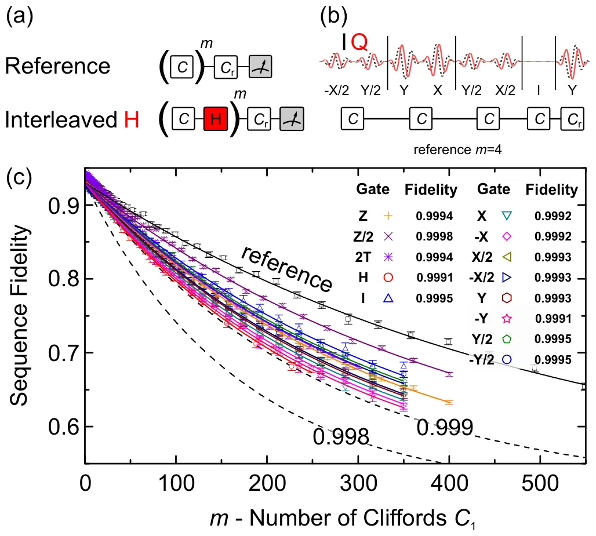
R. Barends et al., Nature 508, 500 (2014), Fig. 2.
Simultaneous randomized benchmarking
Gambetta et al.: two transmons on one chip.
Red: RB on one qubit, nothing on the other (\(C\otimes I\) or \(I\otimes C\)). Blue: RB on both qubits at the same time (\(C\otimes C\)).
Top: \(P(0)\) of qubit 1. Bottom: \(P(0)\) of qubit 2.
Left, qubits 66 MHz apart: the errors grow from 0.39 % and 0.67 % to 0.86 % and 1.20 %. The drive of one qubit also acts on the other.
Right, qubits 579 MHz apart: almost no change.

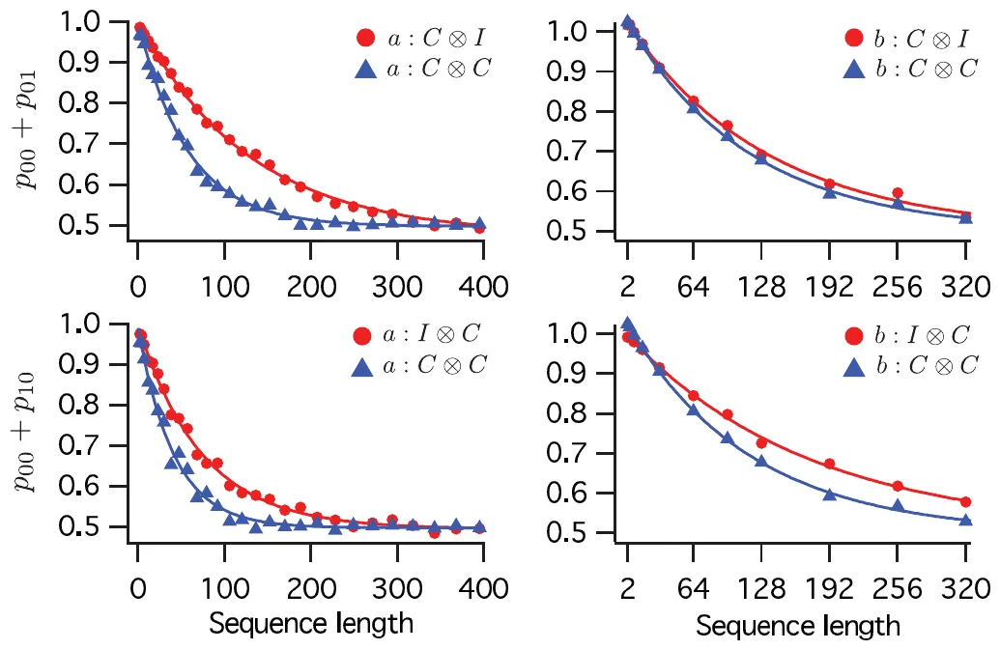
J. M. Gambetta et al., Phys. Rev. Lett. 109, 240504 (2012), Fig. 2 and Table I.
Benchmarking of a CZ gate
(a) The CZ gate: the state |11⟩ moves near the avoided crossing with |02⟩ and comes back.
(b) Interleaved RB: CZ fidelity 0.9944.
(c) The pulses of one sequence: 500 gates.
\(C\): a random Clifford gate of both qubits. After each \(C\): the CZ under test.

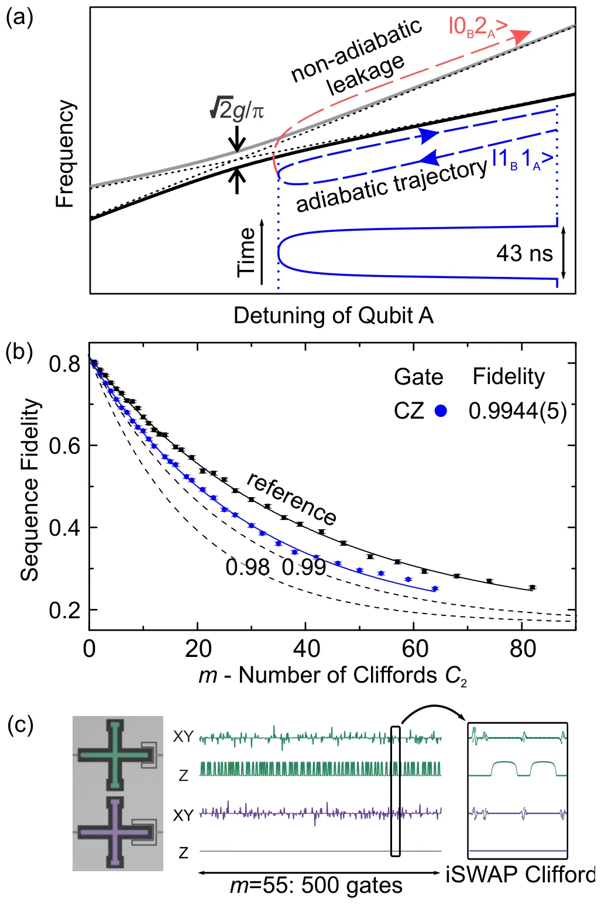
R. Barends et al., Nature 508, 500 (2014), Fig. 3.
PHYS598500 · Week 8
Quantum state tomography
Density matrix of a qubit
\({\rm Tr}\,\hat\sigma_i=0\) and \(\hat\sigma_i\hat\sigma_j=\delta_{ij}\hat I+i\epsilon_{ijk}\hat\sigma_k\) give
So the three expectation values give \(\hat\rho\):
\((r_x,r_y,r_z)\): the Bloch vector. A mixed state is an average of pure states: the same form, with \(|\vec r|\le1\).
Recall from Week 1. Bloch sphere: lecture drawing.
Rotation before the readout
The readout measures only \(\hat\sigma_z\): the resonator frequency depends on \(|0\rangle\) or \(|1\rangle\).
\(r_x=\sin\theta\cos\phi\) and \(r_y=\sin\theta\sin\phi\) come from the phase \(\phi\). The readout does not see \(\phi\).
Rotate first, then read:
The rotation is a \(\frac{\pi}{2}\) pulse, as the second pulse of Ramsey: it turns the phase into a difference of populations.
Lecture animation of an ideal model.
Tomography on the Bloch sphere
Each shot: reset to \(|0\rangle\), prepare, rotate, read once.
1. \(\hat\sigma_z\): read directly. \(P(0)=\frac{1}{2}\big(1+r_z\big)\).
2. \(\hat\sigma_x\): \(R_y(-90^\circ)\) turns \(+x\) to \(+z\). Then \(P(0)=\frac{1}{2}\big(1+r_x\big)\).
3. \(\hat\sigma_y\): \(R_x(90^\circ)\) turns \(+y\) to \(+z\). Then \(P(0)=\frac{1}{2}\big(1+r_y\big)\).
The readout gives 0 or 1: the upper or the lower half of the \(z\) axis. Only the counts are kept.
Lecture animation of an ideal model: binomial shot noise.
Tomography with a finite number of shots
With \(N\) shots per setting, each measured \(\langle\hat\sigma\rangle\) has a statistical error of about \(\frac{1}{\sqrt N}\).
Linear inversion: put the three measured numbers directly into \(\hat\rho\).
The result can lie outside the Bloch sphere, \(|\vec r|>1\). Then \(\hat\rho\) has the eigenvalue \(\frac{1}{2}\big(1-|\vec r|\big)<0\): not a physical state.
For a pure state, about half of the estimates fall outside. More shots make the excess smaller, but do not remove it.
Lecture animation of an ideal model: pure true state, binomial shot noise.
Maximum-likelihood estimation
Data: setting \(a=x,y,z\), \(N\) shots: \(n_{0a}\) times \(|0\rangle\), \(n_{1a}\) times \(|1\rangle\).
A state \(\vec r\) gives \(|0\rangle\) with the probability \(\frac{1+r_a}{2}\). Log-probability of the counts:
\(\frac{\partial\ln\mathcal L}{\partial r_a}=0\) gives \(r_a=\frac{n_{0a}-n_{1a}}{N}=\langle\hat\sigma_a\rangle\): the linear inversion.
If \(|\vec r|>1\): the maximum lies on \(|\vec r|=1\). Lagrange multiplier \(\lambda\):
\(\frac{1-r_a^2}{N}\): the variance of \(\langle\hat\sigma_a\rangle\). An uncertain component moves more.
Lecture animation of an ideal model: cut y = 0, only the x and z settings.
Density matrix of two qubits
Two qubits: \(|\psi\rangle=c_{00}|00\rangle+c_{01}|01\rangle+c_{10}|10\rangle+c_{11}|11\rangle\).
A \(4\times4\) matrix. Diagonal: \(|c_{00}|^2,\dots,|c_{11}|^2\), the probabilities of the four readout results.
Off-diagonal: the phases between the basis states. The readout does not see them.
\(|\Phi^+\rangle=\frac{1}{\sqrt2}\big(|00\rangle+|11\rangle\big)\): \(\frac{1}{2}\) in the four corners, 0 elsewhere.
A mixed state is an average of pure states. \(\frac{1}{2}\big(|00\rangle\langle00|+|11\rangle\langle11|\big)\): the same diagonal as \(|\Phi^+\rangle\), no off-diagonal.
Lecture animation of an ideal model.
Tensor product of Pauli matrices
Two qubits: \(4\times4\) matrices. The tensor product puts the whole \(\hat B\) into each element of \(\hat A\):
Rules: \(\big(\hat A\otimes\hat B\big)\big(\hat C\otimes\hat D\big)=\hat A\hat C\otimes\hat B\hat D\) and \({\rm Tr}\big(\hat A\otimes\hat B\big)={\rm Tr}\hat A\;{\rm Tr}\hat B\).
Lecture animation of an ideal model.
Density matrix in Pauli products
One qubit: \(\hat I,\hat\sigma_x,\hat\sigma_y,\hat\sigma_z\). Two qubits: the 16 products \(\hat\sigma_i\otimes\hat\sigma_j\), \(i,j\in\{0,x,y,z\}\), \(\hat\sigma_0=\hat I\).
The two rules and \({\rm Tr}\big(\hat\sigma_i\hat\sigma_k\big)=2\delta_{ik}\) give:
Write \(\hat\rho=\frac{1}{4}\sum_{i,j}r_{ij}\,\hat\sigma_i\otimes\hat\sigma_j\). Multiply by \(\hat\sigma_k\otimes\hat\sigma_l\) and take the trace. Only one term is left:
\(\langle\hat I\otimes\hat I\rangle=1\). \(\langle\hat\sigma_i\otimes\hat I\rangle\): the Bloch vector of qubit 1. \(\langle\hat I\otimes\hat\sigma_j\rangle\): of qubit 2. The other nine: correlations. 15 unknown numbers.
Lecture animation of an ideal model.
Two-qubit state tomography
Settings: x, y or z on each qubit. Nine settings. For each setting:
- Reset both qubits to \(|00\rangle\). Prepare the state.
- Rotate each qubit for its setting.
- Read both qubits once: \(|00\rangle\), \(|01\rangle\), \(|10\rangle\) or \(|11\rangle\).
- Repeat 1–3 \(N\) times. Count \(n_{00},n_{01},n_{10},n_{11}\).
- Result 0 counts \(+1\), result 1 counts \(-1\). \(\hat\sigma_i\otimes\hat\sigma_j\) takes the product: \[\big\langle\hat\sigma_i\otimes\hat\sigma_j\big\rangle=\frac{n_{00}-n_{01}-n_{10}+n_{11}}{N}\]
- The same counts give \(\langle\hat\sigma_i\otimes\hat I\rangle\) and \(\langle\hat I\otimes\hat\sigma_j\rangle\).
Lecture animation of an ideal model: multinomial shot noise.
Bell states on a superconducting chip
(a) Make the state, then tomography: rotations and a joint readout of both qubits.
(b)–(e) Re ρ̂ of four Bell states.
The paper names the states differently: |Ψ±⟩ = \(\frac{1}{\sqrt2}\big(|00\rangle\pm|11\rangle\big)\).

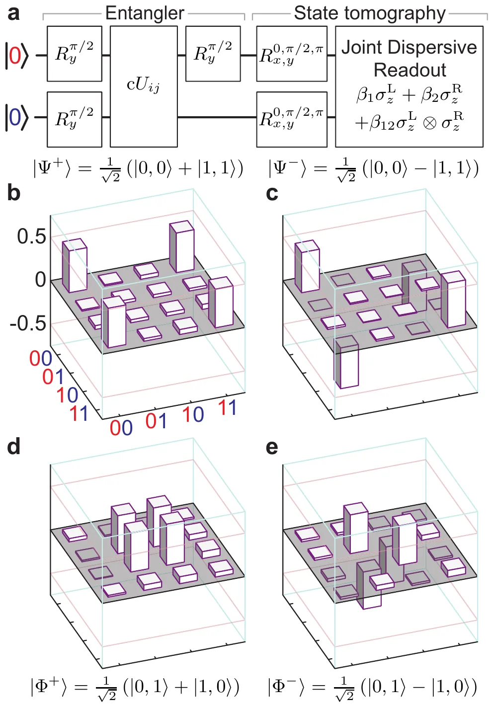
L. DiCarlo et al., Nature 460, 240 (2009), Fig. 3.
GHZ-state tomography
Re \(\hat\rho\) of \(\frac{1}{\sqrt2}\big(|0\cdots0\rangle+|1\cdots1\rangle\big)\) for 2, 3, 4 and 5 qubits. Fidelity: 0.995, 0.960, 0.863, 0.817.

R. Barends et al., Nature 508, 500 (2014), Fig. 4.
PHYS598500 · Week 8
Initialization
Passive reset
Every shot starts in \(|0\rangle\). The simplest way: wait. Worst case: the last shot leaves the qubit in \(|1\rangle\).
The qubit decays to \(|0\rangle\) with the time \(T_1\), down to a thermal floor:
\(T\): the effective temperature of the qubit. 5 GHz and 50 mK give \(P_{\rm th}\approx0.8\,\%\).
Usual wait: about \(5T_1\). With \(T_1=100\ \mu\)s this is 0.5 ms per shot. Gates and readout take about 1 μs.
Lecture animation of an ideal model: f₀₁ = 5 GHz, the qubit in |1⟩ after the last shot. Numbers: X. Y. Jin et al., Phys. Rev. Lett. 114, 240501 (2015).
Reset by measurement
Read the qubit first. Then:
Heralding: keep only the shots that read \(|0\rangle\).
Feedback: when the result is \(|1\rangle\), apply a \(\pi\) pulse.
Both are fast: one readout instead of \(5T_1\). The readout error \(e\) stays:
\(p\): \(P(1)\) before. Feedback needs a QND readout and fast electronics: the decision takes a few hundred ns.
Lecture animation of an ideal model: the same readout error in both directions. Numbers: D. Ristè et al., Phys. Rev. Lett. 109, 240502 (2012).
Reset by feedback on a transmon
The loop: wait \(\tau_{\rm init}\), measure, then the pulse \(\theta\). Repeat.
\(\theta\): the experiment of each run. (a) \(\theta=\pi\) leaves the qubit in \(|1\rangle\). (b) \(\theta=0\) leaves it in \(|0\rangle\).
\(P_{\rm err}\): the measured probability that the next run does not start in \(|0\rangle\).
Black, no Fb: only wait. \(P_{\rm err}\) stays at about 15 %: the qubit is hot (127 mK).
Purple, Fb: measure, and a \(\pi\) pulse if the result is 1 (three rounds). \(P_{\rm err}\) drops to about 3 %.

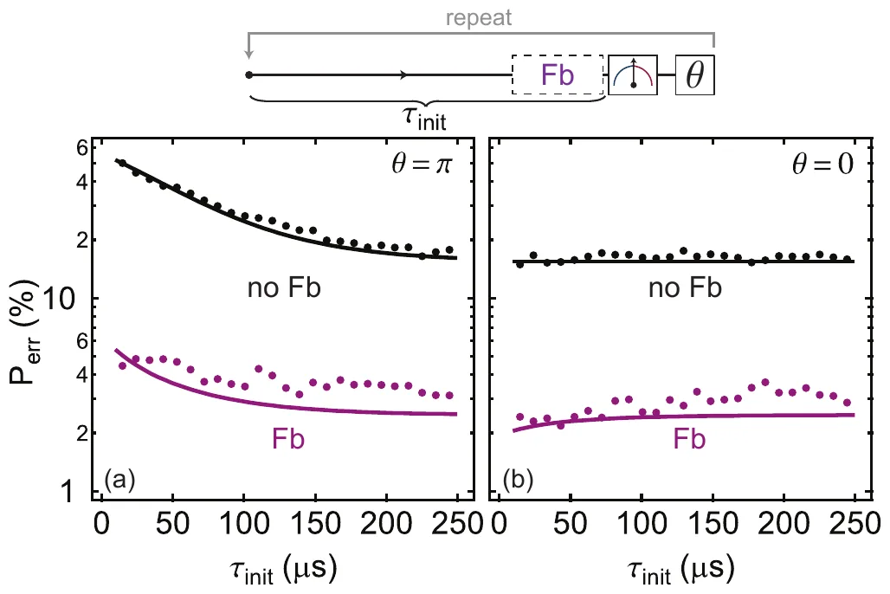
D. Ristè et al., Phys. Rev. Lett. 109, 240502 (2012), Fig. 4.
Swapping into a lossy resonator
Couple \(|1,0\rangle\) to \(|0,1\rangle\): the qubit gives its excitation to a resonator. The photon then leaks out at the rate \(\kappa\).
\(|j,n\rangle\): qubit level \(j\), \(n\) photons in the resonator.
Tunable qubit: a flux pulse moves the qubit into resonance with the resonator (Reed 2010).
\(g\gg\kappa\): the population swaps back and forth, the envelope decays as \(e^{-\kappa t/2}\). Small \(g\): one slow decay.
Lecture model: two levels and one decay. Numbers: M. D. Reed et al., Appl. Phys. Lett. 96, 203110 (2010).
Reset by tuning into resonance
(a) A flux pulse moves the qubit close to the cavity for the time τ.
(b) Blue: with the pulse. Time constant 16.9 ns: 99.9 % in 120 ns.
Red: without the pulse, 540 ns.
Insets: Rabi oscillations measure what is left in the excited state.

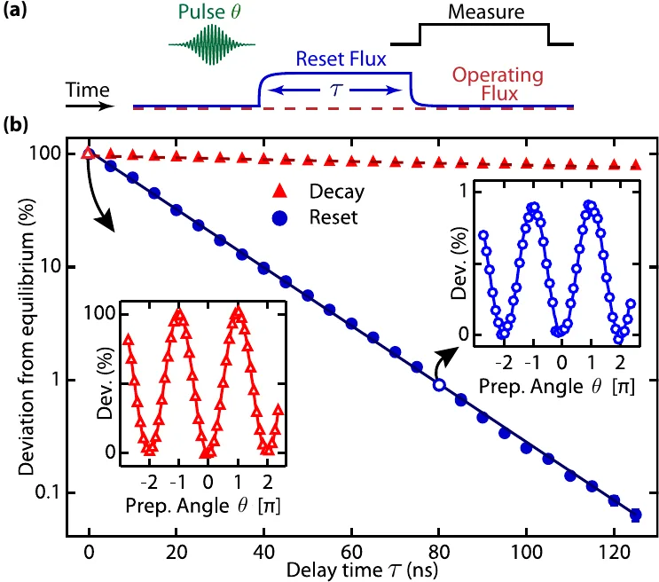
M. D. Reed et al., Appl. Phys. Lett. 96, 203110 (2010), Fig. 3.
Parametric reset
(a) Modulate the flux: \(A\sin(\omega_m t)\) for the time \(\tau\).
(b) Where a sideband meets the resonator (n = 1, 2, 3), the qubit loses its excitation.
(c) Points A, B, C: slow decay, fastest smooth decay, swap oscillation.
Point C: 0.08 % left after 34 ns.

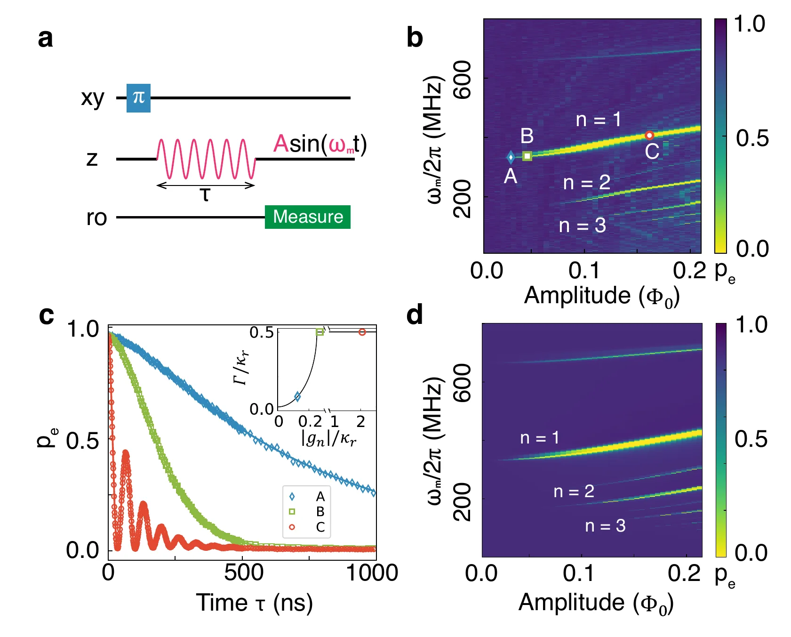
Y. Zhou et al., Nat. Commun. 12, 5924 (2021), Fig. 2; 0.08 % at 34 ns: Fig. 3.
PHYS598500 · Week 8
Calibrating a qubit
Calibration order
One measurement at a time. Its result is the starting point of the next measurement.
One qubit: the readout resonator, the flux bias, the gates, the readout, the coherence.
Two qubits: the interaction and the two-qubit gate. Then RB and tomography check the result.
A parameter drifts: repeat its step and the steps after it.

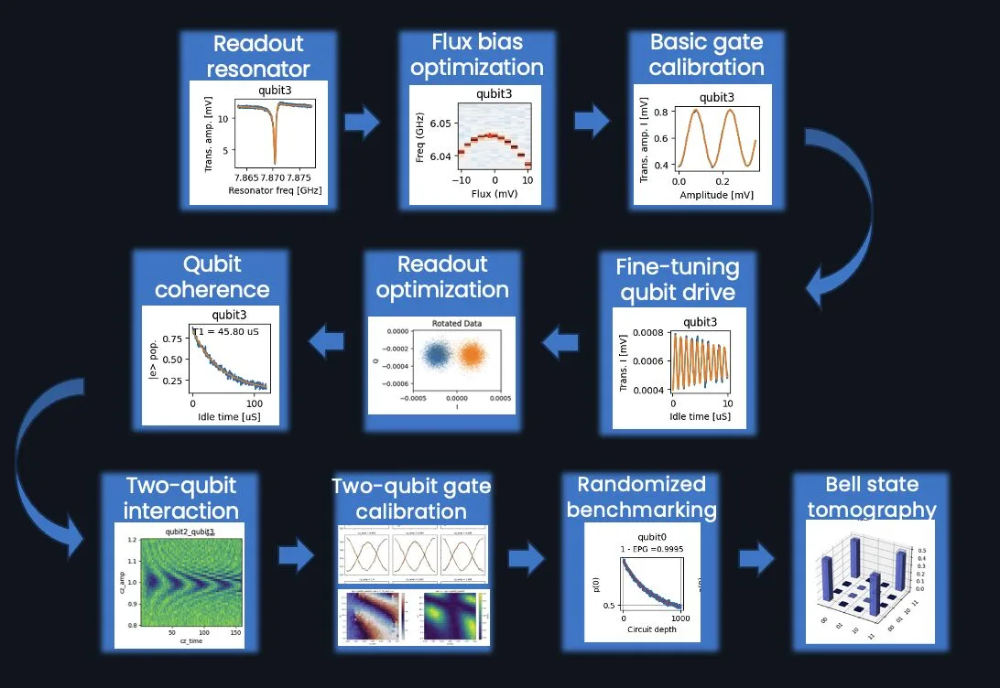
Image: Quantum Machines, QUAlibrate calibration workflow.
Time of flight

Chip: T. Wang et al., Phys. Rev. Applied 11, 034030 (2019), Fig. 1(b). Lecture model: delay 240 ns, IF 50 MHz, ADC offsets +12 mV and −7 mV.
Resonator spectroscopy
Sweep the readout frequency. Measure the amplitude and the phase of the signal.
At the resonator frequency \(f_r\) the amplitude has a dip. \(\kappa\): the decay rate of the resonator. The full width of the dip is \(\frac{\kappa}{2\pi}\).
In the IQ plane the points lie on a circle.
The qubit is in \(|0\rangle\). This \(f_r\) is the first guess of the readout frequency.
Lecture model (notch resonator): \(f_r\) = 4.754 GHz and \(\frac{\kappa}{2\pi}\) = 37.5 MHz from T. Walter et al., Phys. Rev. Applied 7, 054020 (2017).
One-tone spectroscopy
Red: the qubit in |0⟩. Blue: in |1⟩. Up: more readout power (0 dB ≈ 1 photon).
(a) Low power: the peak depends on the qubit state, 9.145 GHz for |0⟩ and 9.112 GHz for |1⟩.
(b)–(d) More power: the peak moves down and breaks up.
(e)–(g) High power: the qubit no longer shifts the resonator. It transmits at its bare frequency, 9.070 GHz.
(h) This jump comes at a lower power for |1⟩. Reed et al. used it as a readout.
Calibration: keep the readout power below the jump.

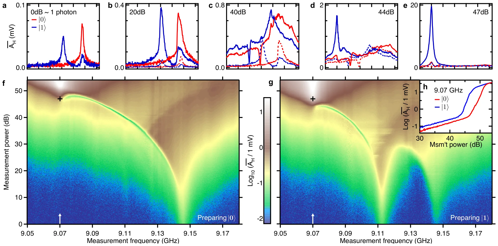
M. D. Reed et al., Phys. Rev. Lett. 105, 173601 (2010), Fig. 1.
Frequency domain and time domain
One tone and two tones measure in the frequency domain: the tones stay on, and we step their frequency.
Pulses measure in the time domain: a short pulse, a wait, then a readout pulse.
Lecture animation of an ideal model.
Spectroscopy against flux
Tune the qubit frequency with flux. Repeat the spectroscopy at each flux:
One tone: the resonator moves by about \(\frac{g^2}{\Delta}\), with avoided crossings where \(\omega_{01}=\omega_r\).
Two tones: the qubit line follows \(\omega_{01}(\Phi)\).
Lecture animation of an ideal model: f_max = 7.8 GHz, f_r = 7.0 GHz, g/2π = 80 MHz.
Rabi oscillation
A pulse of duration \(t\) at the drive frequency \(\omega_d\):
On resonance, a \(\pi\) pulse takes \(t=\frac{\pi}{\Omega}\).
Off resonance, the oscillation is faster and smaller: the chevron.
Lecture animation of an ideal model: square pulse, no decay.
Power Rabi
Keep the pulse duration fixed. Sweep the amplitude.
The rotation angle is the area of the pulse:
The first maximum gives the π-pulse amplitude.
Gates have a fixed duration, so this is the usual calibration.
Lecture animation of an ideal model: cosine envelope, T = 20 ns, 400 shots per point.
Energy relaxation
A π pulse, a wait τ, then the readout.
\(T_1\): the time for the energy to leave the qubit.
Many shots per point and many wait times give a good fit.
Lecture model: binomial shot noise. T₁ = 85 μs from P. Krantz et al., Appl. Phys. Rev. 6, 021318 (2019), Fig. 5a.
Ramsey fringes
\(X_{\frac{\pi}{2}}\), a free time \(\tau\), \(X_{\frac{\pi}{2}}\), then the readout.
Detune the drive a little. The state turns in the equator: the fringes.
The envelope gives \(T_2^*\). The fringe period gives \(\omega_{01}\) very precisely.
Lecture model. T₂* = 95 μs from P. Krantz et al., Appl. Phys. Rev. 6, 021318 (2019), Fig. 5b.
Ramsey against flux
Ramsey at several flux biases near the first guess of the sweet spot.
The drive frequency \(f_d\) stays 3 MHz above the first guess of \(f_{01}\). The fringe frequency is \(f_d-f_{01}\).
Near the sweet spot \(f_{01}\) falls with the square of the flux offset: the fringe frequency is a parabola.
Its minimum gives the sweet spot and \(f_{01}\) there, more precisely than spectroscopy.
At the sweet spot, flux noise changes \(f_{01}\) only in second order.
Lecture model: transmon with two equal junctions, top of the curve at 6.316 GHz from T. Walter et al., Phys. Rev. Applied 7, 054020 (2017).
Optimizing the readout
The resonator frequency depends on the qubit state: \(|1\rangle\) moves it 15.8 MHz down, the dispersive shift.
Prepare \(|0\rangle\) or \(|1\rangle\). Sweep the readout frequency. Choose the frequency where the two IQ points are farthest apart: between the two dips.
Many single shots at this frequency: two blobs. Turn the IQ plane so the blobs lie along I. Put the threshold between them.
\(P(1|0)\): read 1 after preparing \(|0\rangle\). Readout fidelity \(F=1-P(1|0)-P(0|1)\).
Lecture model with \(f_r\), \(\kappa\) and the dispersive shift of T. Walter et al., Phys. Rev. Applied 7, 054020 (2017); noise set for their F = 0.992.
Dephasing and refocusing
Frame: turns at the drive frequency \(\omega_d\). A qubit with \(\omega_{01}=\omega_d+\delta\omega\) turns about z at \(\delta\omega\) in this frame.
Slow noise: \(\delta\omega\) is different in each run, constant during one run. Black: \(\delta\omega=0\). Red: three values of \(+\delta\omega\). Blue: three values of \(-\delta\omega\).
Ramsey: \(Y_{\frac{\pi}{2}}\), \(\tau\), \(Y_{\frac{\pi}{2}}\), read. During \(\tau\) the vectors spread out.
Echo: \(Y_{\frac{\pi}{2}}\), \(\frac{\tau}{2}\), \(X_\pi\), \(\frac{\tau}{2}\), \(Y_{\frac{\pi}{2}}\), read. After \(X_\pi\) the vectors come back together.
Lecture animation of an ideal model: δω constant during one run, short pulses, no decay.
Fast noise and CPMG
The same seven runs. Now \(\delta\omega\) also changes during one run: fast noise, here in about 6 μs. The vectors jitter.
Echo: the slow part comes back. The fast part changed during \(\tau\): it stays.
CPMG, \(N\) pulses \(X_\pi\): \(Y_{\frac{\pi}{2}}\), \(\frac{\tau}{2N}\), \(X_\pi\), \(\frac{\tau}{N}\), \(X_\pi\), \(\ldots\), \(X_\pi\), \(\frac{\tau}{2N}\), \(Y_{\frac{\pi}{2}}\), read.
Noise slower than the spacing \(\frac{\tau}{N}\) cancels. Noise faster than \(\frac{\tau}{N}\) does not.
Lecture animation of a model: slow noise constant during one run, fast noise with a correlation time of 6 μs, short pulses, no T₁.
Pulse errors and decoupling sequences
Amplitude error \(\delta\): each \(\pi\) pulse turns by \(\pi+\delta\).
Detuning \(\delta\omega\): the pulse axis tilts out of the equator by \(\frac{\delta\omega}{\Omega}\). Between the pulses the state turns about z.
CPMG, \(X_\pi\) every time: protects only states along x. A state along y turns \(\delta\) more at each pulse.
XpXm: \(X_\pi\), \(-X_\pi\). Cancels \(\delta\) for every state, not the detuning.
XY4: \(X_\pi\), \(Y_\pi\), \(X_\pi\), \(Y_\pi\). Cancels both for every state; a small second-order rest stays.
Lecture animation of a model: amplitude error and detuning, pulse spacing 4 π-pulse lengths, no decay. N. Ezzell et al., Phys. Rev. Applied 20, 064027 (2023), Eq. (13) and Table I.
CPMG and the noise spectrum
CPMG: \(N\) \(\pi\) pulses in the time \(\tau\). Each \(\pi\) pulse flips the sign of the phase that the noise adds: \(y(t)=\pm1\).
Slow noise: the + and − parts cancel. Noise that changes sign with the pulses, \(f\approx\frac{N}{2\tau}\), adds up.
Average over the noise \(S(f)\), with \(Y\) the Fourier transform of \(y\):
\(|Y|^2\) is a filter. More pulses move it to higher \(f\): CPMG is not sensitive to slow noise.
Lecture model: τ = 3.2 μs; 1/f noise set so that N = 1 matches J. Bylander et al., Nat. Phys. 7, 565 (2011), Fig. 2d (T₁ = 11.5 μs).
Noise spectroscopy with CPMG
(a) The CPMG sequence.
(b) Filters for N = 0 to 10: the peak moves to higher frequency.
(c, d) More π pulses: slower decay.
(g) The noise spectrum from the decays.

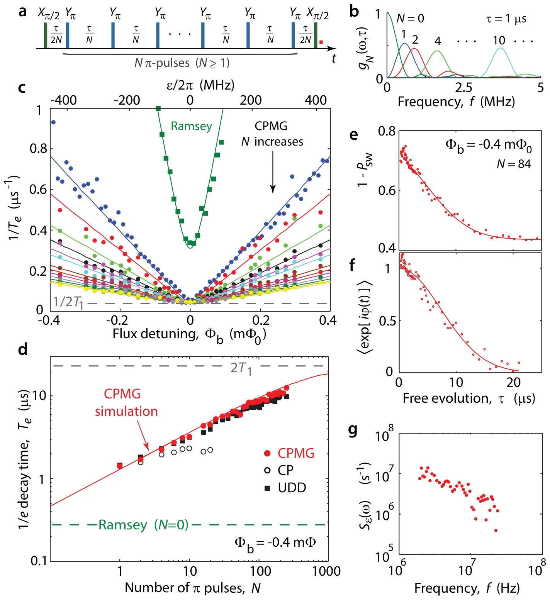
J. Bylander et al., Nature Phys. 7, 565 (2011), Fig. 2.
Gate tuning with randomized benchmarking
(a) Reference RB (black) and RB with the gate X/2 after each Clifford (red).
(b) Sequence fidelity at fixed \(m\) against the pulse amplitude \(A\), the frequency \(f\) and the DRAG weight \(\alpha\).
Longer sequences (m = 1, 50, 100, 300) give sharper peaks. The peak gives the best setting.

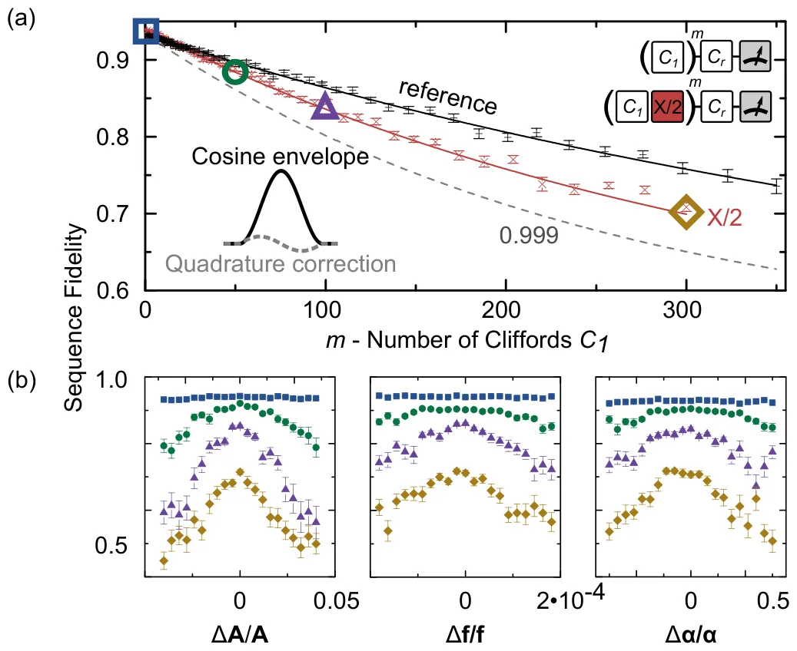
J. Kelly et al., Phys. Rev. Lett. 112, 240504 (2014), Fig. 1.
Leakage in randomized benchmarking
(a) A drive at f₁₀ also reaches |2⟩: leakage. The ac Stark shift of the 1–2 transition gives phase errors.
(b) DRAG pulses with three weights α.
(c) Sequence fidelity: best for α = 0.5, error per Clifford 9.6 × 10⁻⁴.
(d) Population of |2⟩ against m: lowest for α = 1.

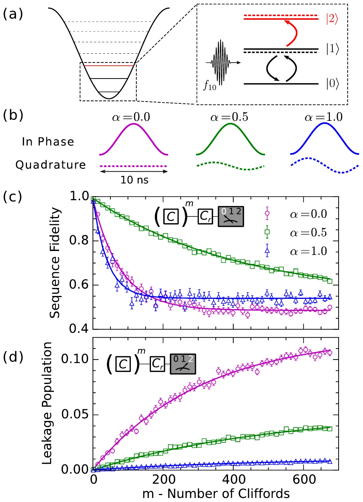
Z. Chen et al., Phys. Rev. Lett. 116, 020501 (2016), Fig. 1.
Error distributions on Sycamore
(a) Distributions of the Pauli errors: one-qubit gates, two-qubit gates, a full cycle, readout.
Simultaneous operation (solid) gives larger errors than isolated (dashed).
(b) The errors on the chip.

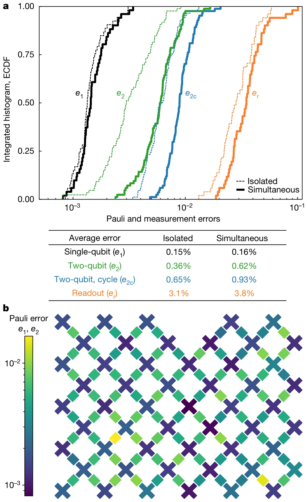
F. Arute et al., Nature 574, 505 (2019), Fig. 2.
PHYS598500 · Week 8